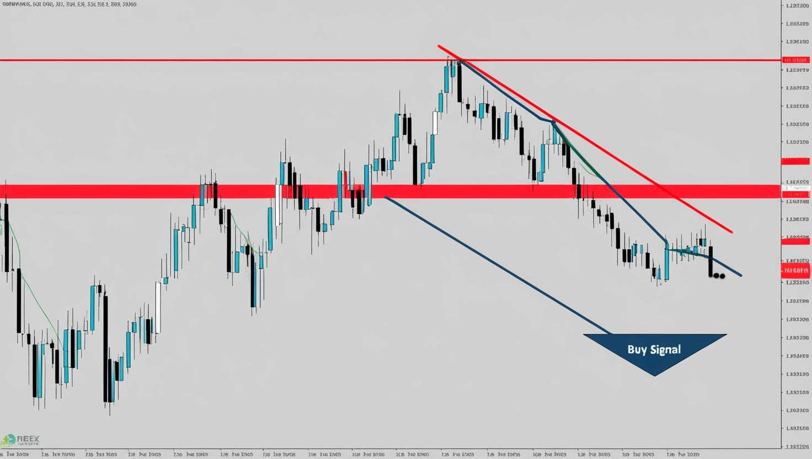
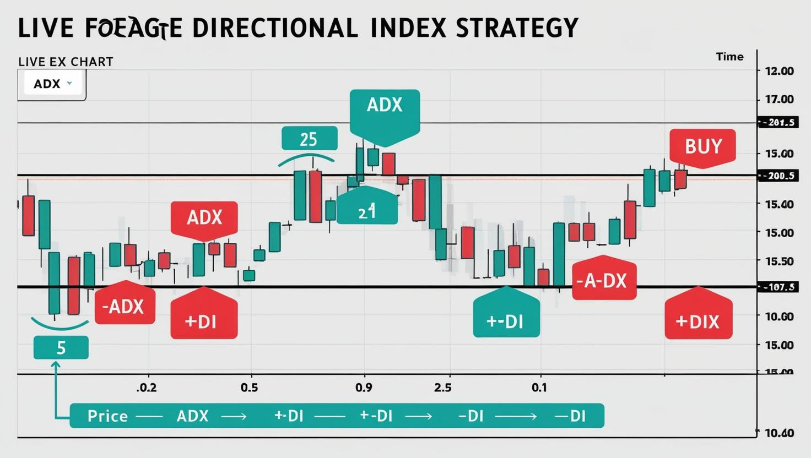
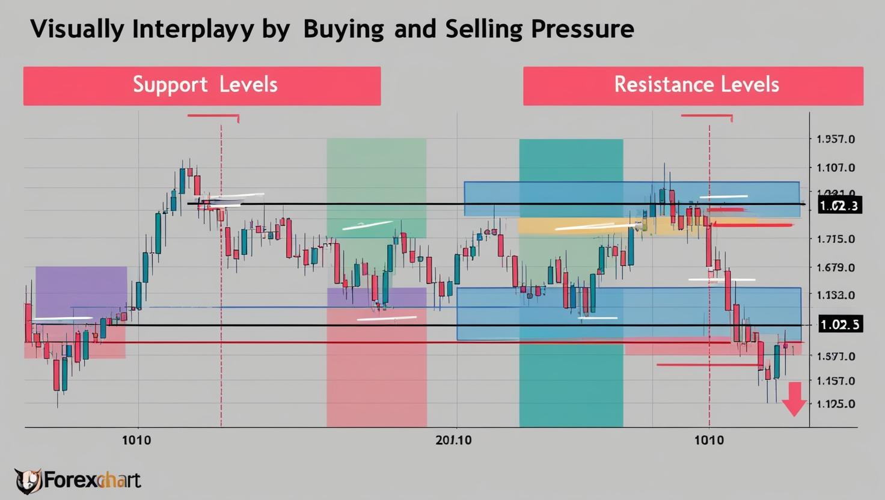
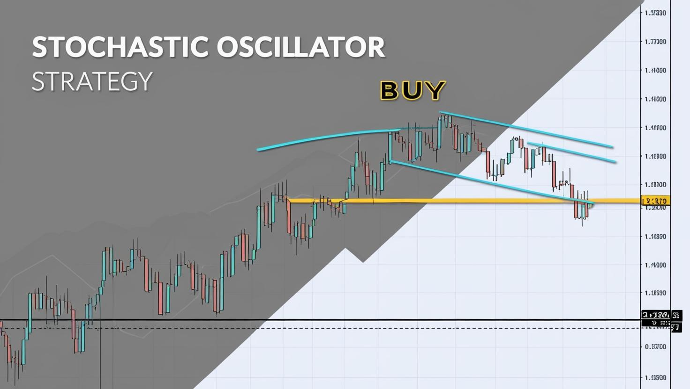
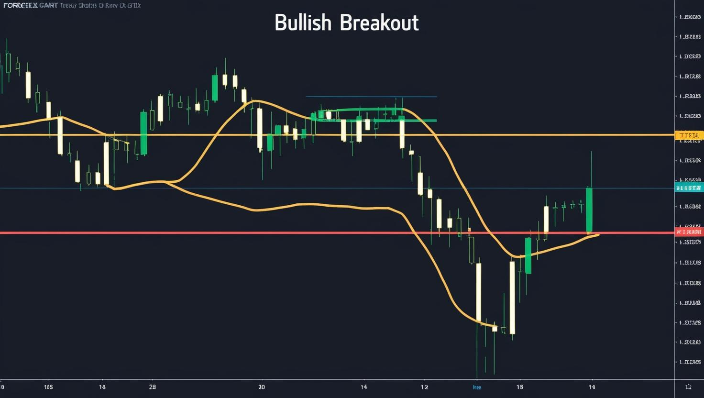

It's always these strategies that can determine your profitable trades, meaning that the strategy you have to choose for any trade matters alot.Before we get to see the different kinds of strategies that have been proved by many traders, remember one cannot specify a specific strategy for any one to be the best but rather the best one is determined by bringing profits many times. Since we have different abilities therefore any strategy can be the best provided it suits you as a trader
As a trader one of the questions that you should first answer is "
Do I have a forex trading strategy?
Does it make me comfortable?
But remember there is no guarateed 100% win ratio strategy.For Beginners you should never do the following
Never borrow money,always trade with your own money.
Never trade the money that you cant afford to loose keeping in mind that for any trading comes with that risk of losing.
Never divert away from your strategy,and whenever a day meets your strategy make sure to close the trading for the day.
B. Trendline Trading Strategy

How it Works:
A trendline is drawn by connecting at least two swing highs (for a downtrend) or two swing lows (for an uptrend).
Buy when price touches an upward trendline and bounces.
Sell when price touches a downward trendline and rejects.
Example:
In an uptrend, draw a trendline connecting higher lows. Enter a long trade when price bounces off the trendline.
In a downtrend, draw a trendline connecting lower highs. Enter a short trade when price rejects the trendline.
Best Timeframe to Use: Works on all timeframes, but best on 1-hour and 4-hour charts.
Pros:
✔ Helps identify dynamic support and resistance levels.
✔ Works well in trending markets.
Cons:
❌ Trendlines are subjective; different traders may draw them differently.
❌ Can be broken unexpectedly by strong price moves.
C. ADX (Average Directional Index) Strategy

How it Works:
ADX measures trend strength, not direction.
ADX above 25 → Strong trend (suitable for trend trading).
ADX is often used with +DI (Directional Indicator) and -DI to determine trend direction.
Example:
Buy when: ADX is above 25 and +DI is above -DI.
Sell when: ADX is above 25 and -DI is above +DI.
Best Timeframe to Use: Works best on 4-hour and daily charts.
Pros:
✔ Helps filter out weak trends.
✔ Avoids false signals in ranging markets.
Cons:
❌ Can lag, especially in fast-moving markets.
❌ Does not provide exact entry and exit points—only confirms trend strength.
Range Trading Strategies

A. Support and Resistance Levels
Support and Resistance Levels: Buy at support and sell at resistance within a defined price range.
How it Works:
Support is the price level where a downward trend can be expected to pause due to a concentration of demand.
Resistance is the price level where an upward trend can pause or reverse due to selling pressure.
Traders buy near support and sell near resistance.
Example:
Buy at support: When price reaches a support level (e.g., $1.1000), it’s likely to bounce upwards.
Sell at resistance: When price reaches a resistance level (e.g., $1.1200), it’s likely to drop.
Best Timeframe to Use: Works best on 1-hour, 4-hour, and daily charts.
Pros:
✔ Simple to understand and apply.
✔ Effective in sideways or range-bound markets.
Cons:
❌ False breakouts can occur, leading to losses.
❌ Not effective in trending markets.
B. Stochastic Oscillator Strategy
This is a momentum indicator that is used to identify over bought or oversold conditions.
Best for markets that move sideways within a range.
Stochastic Oscillator Strategy: Use Stochastic indicators to identify overbought (sell) and oversold (buy) conditions. 
How it Works:
The Stochastic Oscillator compares a specific closing price to a range of prices over a period of time (typically 14 periods).
It produces values between 0 and 100.
Overbought (above 80) signals that the market is overextended to the upside and may reverse (sell signal).
Oversold (below 20) signals that the market is overextended to the downside and may reverse (buy signal).
Example:
Buy when the Stochastic indicator is below 20 (oversold) and starts moving upwards.
Sell when the Stochastic indicator is above 80 (overbought) and starts moving downwards.
Best Timeframe to Use: Best used on 15-minute to 4-hour charts.
Pros:
✔ Good for identifying potential reversal points in range-bound markets.
✔ Can be used for both short-term and medium-term trades.
Cons:
❌ Can give false signals during strong trends.
❌ Requires confirmation from other indicators for higher accuracy.
Breakout Trading Strategies
A. Bollinger Bands Breakout

How it Works:
Bollinger Bands consist of a middle moving average line (typically 20-period) and two outer bands (standard deviations above and below the middle line).
When price breaks above the upper band, it indicates a strong upward move, signaling a potential buy signal.
When price breaks below the lower band, it indicates a strong downward move, signaling a potential sell signal.
Example:
Buy when price breaks above the upper Bollinger Band.
Sell when price breaks below the lower Bollinger Band.
Best Timeframe to Use: Best used on 15-minute to 1-hour charts.
Pros:
✔ Identifies strong price moves.
✔ Works well in trending markets.
Cons:
❌ False breakouts can occur, leading to losses.
❌ Can be less effective in choppy or sideways markets.
B. Triangle Pattern Breakout
How it Works:
Triangle patterns are formed when the price consolidates between two converging trendlines.
There are three main types: ascending triangles, descending triangles, and symmetrical triangles.
A breakout occurs when price breaks out of the triangle pattern, indicating the start of a strong move in the direction of the breakout.
Example:
Buy when price breaks above the upper trendline of an ascending triangle.
Sell when price breaks below the lower trendline of a descending triangle.
Best Timeframe to Use: Best used on 1-hour, 4-hour, and daily charts.
Pros:
✔ Indicates a clear direction after consolidation.
✔ Effective in trending markets after breakouts.
Cons:
❌ False breakouts can lead to losses.
❌ Patterns can take time to form, which may delay entry.
Traders look for price breakouts from key levels.
Bollinger Bands Breakout: When price breaks above the upper band or below the lower band, it signals a strong move.
Triangle Pattern Breakout: Identify ascending, descending, or symmetrical triangles and trade breakouts accordingly.
Scalping Strategies (Short-Term)
A. 1-Minute Scalping
Quick trades that last minutes to seconds.
1-Minute Scalping: Use fast-moving indicators like the 9 EMA and 21 EMA for quick trades.
RSI Scalping: Trade when RSI crosses above 30 (buy) or below 70 (sell).
How it Works:
Scalping involves making fast, small trades that last seconds to minutes, often using short timeframes like the 1-minute chart.
Traders typically use moving averages like the 9 EMA (Exponential Moving Average) and 21 EMA to identify quick entry points.
Scalpers enter and exit trades quickly to capitalize on small price movements.
Example:
Buy when the 9 EMA crosses above the 21 EMA on the 1-minute chart.
Sell when the 9 EMA crosses below the 21 EMA on the 1-minute chart.
Best Timeframe to Use: Best used on the 1-minute chart.
Pros:
✔ Provides quick profits in fast-moving markets.
✔ Works well in highly liquid markets with low spreads.
Cons:
❌ Requires significant focus and quick decision-making.
❌ High transaction costs due to frequent trades.
B. RSI Scalping
How it Works:
The Relative Strength Index (RSI) is a momentum oscillator that measures the speed and change of price movements.
RSI values range from 0 to 100. Values above 70 indicate overbought conditions, and values below 30 indicate oversold conditions.
In scalping, traders use RSI to identify quick reversal points for short-term trades.
Example:
Buy when RSI crosses above 30 from below (indicating oversold conditions).
Sell when RSI crosses below 70 from above (indicating overbought conditions).
Best Timeframe to Use: Best used on 1-minute to 5-minute charts.
Pros:
✔ Simple to understand and implement.
✔ Works well in ranging markets and during quick reversals.
Cons:
❌ Can give false signals in trending markets.
❌ Needs confirmation from other indicators for higher accuracy.
Swing Trading Strategies (Medium-Term)
A. Fibonacci Retracement
Holding trades for days or weeks.
Fibonacci Retracement: Identify pullbacks within a trend using Fibonacci levels (e.g., 38.2%, 50%, 61.8%).
MACD Crossover: Trade when the MACD line crosses the signal line.
How it Works:
Fibonacci retracement levels are horizontal lines that indicate potential support and resistance levels based on the Fibonacci sequence.
Common levels to watch are 38.2%, 50%, and 61.8%, which indicate potential reversal points in a trending market.
Traders use these levels to enter trades when the price retraces after a trend move and finds support or resistance at these Fibonacci levels.
Example:
Buy when the price retraces to the 38.2% or 50% Fibonacci level in an uptrend and starts moving higher.
Sell when the price retraces to the 61.8% Fibonacci level in a downtrend and starts moving lower.
Best Timeframe to Use: Best used on 4-hour, daily, or weekly charts.
Pros:
✔ Effective in trending markets.
✔ Can identify key reversal levels.
Cons:
❌ False signals can occur if the price does not reverse at the Fibonacci level.
❌ Requires confirmation from other indicators for higher accuracy.
B. MACD Crossover
How it Works:
The Moving Average Convergence Divergence (MACD) indicator is a momentum oscillator that shows the relationship between two moving averages (the 12-day and 26-day EMAs).
The MACD line crossing above the signal line is a bullish signal (buy), and the MACD line crossing below the signal line is a bearish signal (sell).
Traders use the MACD crossover to identify changes in the strength or direction of a trend.
Example:
Buy when the MACD line crosses above the signal line (bullish crossover).
Sell when the MACD line crosses below the signal line (bearish crossover).
Best Timeframe to Use: Best used on 4-hour and daily charts.
Pros:
✔ Works well in trending markets.
✔ Can confirm the strength and direction of the trend.
Cons:
❌ May give false signals during sideways or choppy markets.
❌ Lags behind price action, leading to late entries.
Carry Trade Strategy (Long-Term)
Interest Rate Differentials: Buy currencies with high interest rates and sell those with low interest rates to earn overnight interest (swap).
Carry Trade Strategy
How it Works:
The carry trade strategy involves borrowing money in a low-interest-rate currency and using it to buy a higher-yielding currency.
This strategy capitalizes on the difference in interest rates between two currencies, known as the "interest rate differential" (IRD).
Traders make a profit not only from the change in the exchange rate but also from the interest differential, which is earned as a "swap" (overnight interest).
Example:
Buy a currency pair where the base currency has a higher interest rate than the quote currency. For example, buying AUD/JPY (Australian Dollar / Japanese Yen) if the Australian interest rate is higher than Japan’s.
Sell the currency pair when the interest rate differential narrows or reverses, potentially resulting in a smaller swap or even a negative one.
Best Timeframe to Use: Best used on daily or weekly charts, as this is a longer-term strategy.
Pros:
✔ Provides consistent returns through the interest rate differential.
✔ Ideal for long-term traders looking for passive income from the swap.
Cons:
❌ Exposed to exchange rate risk if the currency pair moves unfavorably.
❌ Requires careful monitoring of interest rate decisions and central bank policies.